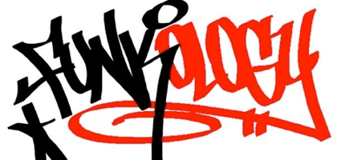

FunKoLoGy Annual General Meeting

FunKoLoGy Annual General Meeting
Tuesday, March 22, 2011

FunKoLoGy is proud to announce its new committee for the academic year 2011/2012. A big thank you to all who came down to the AGM and hearty congratulations to the new committee! The spirit of FunKoLoGy now lives on in their veins, and we look forward to an exciting year ahead!
President: Jasmine Ng (3rd year Chem Eng)
Vice-President : Marie Wong (1st year Bio Chem)
Secretary : Viet Bui-Le (3rd year Biomed Eng)
Treasurer : Chris Wood (3rd year Chemistry)
Breaking Rep: Alex Aina (??)
Artistic Director : Adrianna Liu (1st year Biomed)
Publicity Manager : Kawai Liu (2nd year Aero Eng)
Social Secretary : Bo Li (2nd year Physics)
General Committee (Logistics): Eva Yuan (1st year Maths)
Jasmine Marie Viet Chris Alex
Bo Kawai Adri Eva
>>>>>>>>>>>>>>>>>>>>>>>>>>>>>>>>>>>>>>>>>>
FunKoLoGy will be holding its AGM towards the end of the Spring Term. It will happen after the class on tuesday and there will be pizzas and drinks provided for all present!
Where: Chemistry Common Room
When : 22nd March (Tuesday) 8 - 9pm
Application is open now and interested members should drop an email to <maxc23@gmail.com> with a short write up on themselves and how they would like to contribute in the position applied for. Note that you need to submit a manifesto before you can run for a position. All candidates would be required to give a 1 minute speech on the day itself.
Positions available are the following 4 core positions, 1 breaking representative and 2 General Committee positions. For more information about the core positions, you could either speak to one of us directly anytime or just drop an email to the respective person. We will be more than happy to answer any questions!
President: Sau <yuen.tham07@imperial.ac.uk>
Vice-Pres: Ant <anthony.chow08@imperial.ac.uk>
Secretary: Max <maxc23@gmail.com>
Treasurer: Mat <mathew.tsui07@imperial.ac.uk>
FunKoLoGy’s AGM has always been an important one. The next committee voted in will not only shoulder the responsibility of spreading our love for street dance, but also in elevating the standards of FunKoLoGy. Come down and join us in this AGM, to bid farewell to the outgoing committee, and have your say in the future of the club!
_______________________________________________________________________________
manifestos
The following are the manifestos of the candidates who were elected. The other manifestos have been removed.
_______________________________________________________________________________
Candidate : Jasmine Ng
Position : President
Heya! My name is Jasmine and I’m a 3rd year Chemical Engineering student. I discovered Funkology even before coming to Imperial, and I knew from the outset that I wanted to be a part of this awesome society! Dance has been a passion of mine since a young age, and it is my great desire to share this passion with others. This is where I believe Funkology plays a vital part, being the first step into urban dance for many.
My experience as both the dancer and choreographer for the past two Malaysian Night events has fully prepared me to handle the challenges and difficulties faced by handling such a society. Improving on the quality of our dancers, integrating the society as a whole and providing inspiration and exposure to all styles of dance are just a few of the ideas I have in mind. I’d like to contribute to the society in every way I possibly can, and I cherish all ideas and suggestions proposed! I hope to be given the opportunity to grow with the society to new levels of awesomeness!
Candidate : Marie Wong
Position : Vice-President
Hi everyone! My name is Marie, a 1st year biochemistry student from Hong Kong. I started dancing four years ago and it has been my dominant hobby ever since. In the past five months, funkology has provided me with a lot of memorable and fun times. It is the enthusiasm and energy within the Society that has prompted me into applying for this position.
My invaluable experience as the dance director and choreographer of the Hong Kong Variety Show 2011 has proved my ability to tackle problems and unfaltering dedication to dance. As a member of funkology, I’ve seen how the crew has worked, how it hasn’t, and ultimately how we can take it forward. I hope to strengthen the bond between the crew and members, contribute creative ideas to the society and promote further the presence of funkology. With my friendly and positive personality, I am sure I will do an excellent supporting role in the committee and get along well with other members.
Candidate : Viet Bui-Le
Position : Secretary
My name is Viet and I'm a 3rd year studying Biomedical Engineering. I joined Funkology this year and have loved coming to all the classes, both breaking and hiphop. I've learnt to improve my dancing a lot, even performed in East meets West and made some great friends, so next year, I'd like to give something back to what is easily the coolest society at Imperial.
If you don't mind me spamming your inboxes every week, vote me for secretary!
Candidate : Chris Wood
Position : Treasurer
Hey I’m Chris and I’m a 3rd year chemist from Kent. I started Funkology last October and I’ve been addicted ever since, religiously going to classes both with and outside the society.
I decided to run for treasurer because I feel I would do a good job, but mainly so that I could help contribute and give something back to this amazing society. Experience wise, I used to run my dad’s company expenses, had various work experience placements at accountants offices and was hall senior at BSH last year. I like to think I’m organised and good with my own money but hope that I can have the opportunity to help Funkology to continue to provide such a great environment where people can not only learn and dance, but also meet new people, make friends and have a great time.
Candidate Alexander Aina
Position : Breaking Rep
I would like to nominate myself for funkology’s breaking rep. The reason I feel that I would make the best rep is because I am currently active on the scene and believe I could really make the breaking sector of the society grow exponentially. I feel that the breaking in Imperial could be more popular than it is right now and I currently have many very experienced breakers lined up who want to spread knowledge, help teach lessons and help show others that b-boys are really amazing dancers and not just incredible acrobats. I would also like to organize more things with funkology and have the breaking section participating in more shows with funkology!
Candidate : Adrianna Liu
Position : Artistic Director
Hey, my name is Adri and im a first year biomed. I started dancing almost 3 years ago when I became more and more interested in hip hop music. I was inspired when watching hip hop dance artist’s music videos, like usher and chris brown. From there I started lookin at youtube videos to find out more about other styles of hip hop dance and I taught myself through watching them. Since joining the funkology crew at the beginning of the year, I have been given lots of opportunities; I startd choreographing and was allowed to share my choreos with the rest of the crew to be performed, and I even got to teach a class. Throughout my year in the crew, I have learned about the way the club is run, and I have seen what has worked well, and what improvements need o be made. For example, I think that the beginners routine in East Meets West was a great opportunity for people who aren’t in the crew to perform and I’d like there to be even more opportunities next year. However, an improvement we could make would be to integrate the breaking side of funkology more, and hopefully have performances that include both the crew and breakers. Dance, like all arts is a self motivated discipline which bonds people together, and through my passion and dedication I hope to inspire others in funkology.
Candidate : Kawai Liu
Position : Publicity Manager
Sup! I’m Kawai, a 2nd Year Aeronautical Engineering student from Jamaica (originally from Hong Kong). I first encountered the world of urban dance 6 years ago where I found some YouTube videos on Popping and Waving and started to take interest in that with Hip-Hop gradually stemming during this period of time. Being elected for the Dance Director for the Chinese Society Variety Show 2010, not only my sense in dance grew, but also my leadership and team working skills. Dancing rocks and since Funkology is all about promoting streetdance, I want to make a contribution to this club and promote how amazingly fun it can be. Through my experience, dancing creates strong bonds between a group of people and the feeling of accomplishment after successfully doing a routine together is second to none.
As vice president, I will be committed to assisting the President in not only shouldering the responsibility of the society, but also raising the standards of Funkology and to give members a warm, friendly and fun environment. I am a very open-minded, extremely approachable individual and always up for new ideas and feedback. As for improvements, I hope to advertise the society more in various different ways, make the website more interactive and organise official monthly outings for members to experience dance classes outside of Imperial. Please do come along this AGM and hear me out!
Candidate : Bo Li
Position : Social Secretary
Hi everyone! This is Bo, a second year physicist, and since I loved coming to Funkology for the weekly dance classes I would like to give something back to this amazing society as a general committee member next year.
I joined Funkology last year with little experience in hip-hop dancing. I was a little nervous about coming to the classes at first. But as soon as I got here, I have received the warmest welcome and the best support in any society that I joined. Inevitably, dancing became my number one hobby! I hope that you all could experience the friendliness that I received.
I believe I would do a good job in the general committee. I had lots of experiences at organising fun events since I’m a hall senior at HWJ this year. I have bags of ideas on social events which I could bring into the committee and I am very excited to make them happen! I’m also a very enthusiastic and committed individual and I would give my all to the society when elected. Let’s have fun in Funkology!
Candidate : Eva Yuan
Position : General Committee (Logistics)
Hey everyone I’m Eva,1st yr mathematics student. Frankly, I’ve been into dancing from long time ago and I take classes not only in funkology but for 3 other dances and external hip hop classes. I enjoy dancing a lot but the thing that I truly loved about funkology ever since performing at EMW is that I feel the connection between people in the team , like a big loving family, which I am more than happy to contribute to. I’ve been helping out the society for some time and I am confident that I’ll be a great secretary for your guys. Nice and clear emails every week, helping out for managing the websites, assisting the president and vice president to make the society a lively and wonderful community for everyone to enjoy.Vote for me and you won't regret it! ^^
----------------------------------------------------------------------------------------------------------------------------------------------------
_______________________________________________________________________________
The time of the year has come for the old to retire and the new to take over. FunKoLoGy hopes to welcome some very capable people on board the committee for the next academic year. Come down and join us, to vote or get voted!